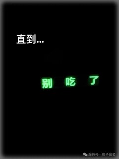

🛠️ Инструменты для перевода
- Программы для редактирования: Photoshop, GIMP, Krita.
- Текстовые редакторы: Notepad++, Sublime Text, VS Code.
- Онлайн-инструменты: Online Text Tools.
📚 Ресурсы для изучения китайского
- Pleco — китайский словарь.
- HSK Academy — изучение китайского языка.
- Chinese-Tools — грамматика и словарь.
💡 Советы по переводу
- Учитывайте культурный контекст мемов.
- Переводите с юмором, чтобы сохранить смысл и эмоции.
- Используйте шрифты, которые подходят для китайских иероглифов.
🎭 Примеры перевода
Оригинал: 本以为这是对象送的暖心冰箱贴 别忘吃饭了
Перевод: Сначала я думала, что это милый магнит на холодильник от моего парня. "Не забудь покушать"

Оригинал: 直到…… 别吃了
Перевод: До того самого момента, как до меня дошло… "Хватит жрать"